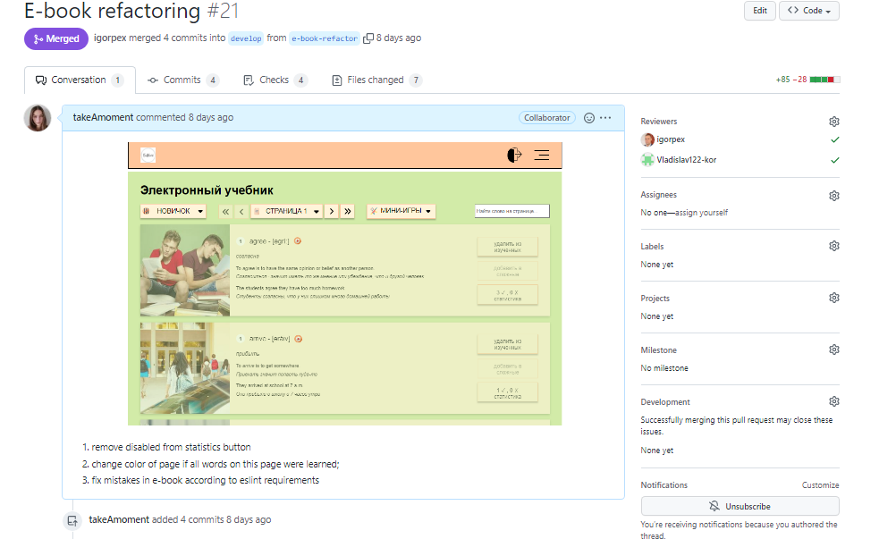

Обзор выполнения финального таска командой
Содержание
- Результат командной работы
- описание приложения
- дополнительные/интересные фичи
- Организация командной работы
- RACI матрица
- kanban
- другие инструменты для организации работы
- организационные сложности и их решение
- Особенности технической реализации проекта и его репозиторий
- использованные технологии
- история коммитов
- примеры PR
- технические сложности и их решение
1. Результат командной работы
Описание приложения
Netlify: https://rslang-igorpex.netlify.app/
Дополнительные/интересные фичи
2. Организация командной работы
RACI матрица
| Igor | Vlad | Sasha | |
|---|---|---|---|
| Серверная часть; авторизация; API; игра "Спринт"; статистика; | R | I | I |
| design; main page; team page; search ficha; | A | R | I | e-book; audiochallenge game | A | I | R |
R – Responsible (исполняет); A – Accountable (несет ответственность); C – Consult before doing (консультирует до исполнения); I – Inform after doing (оповещается после исполнения).
Kanban
Другие инструменты для организации работы
Организационные сложности и их решение
- Отсутствие возможности работать всем членам команды в одном временном графике
- Отсутствие опыта работы с kanban board
- Сложности с разделением задач между участниками команды
- Мерж
3. Особенности технической реализации проекта и его репозиторий
Использованные технологии

- Уберегал от ошибок
- Мешал запуску определенного кода

- HtmlWebpackPlugin
- CopyWebpackPlugin
- Loaders
- Dev-server

- Заствлял правильно писать код
- airbnb-base, airbnb-typescript/base

Chart.js
История коммитов
291 коммит
291 коммит

График коммитов по дням
Примеры PR
36 пул реквестов
36 пул реквестов

https://github.com/igorpex/rslang/pull/21
Технические сложности и их решение
1. Нехватка времени
1. Нехватка времени

Решение

2. Отслеживание переходов по ссылкам и добавление активной стилистики.
Решение
Отслеживать с помощью роутера.
3. Возврат на исходную страницу после логина \ регистрации
Решение
В SessionStorage сохраняется источник перехода.
4. Чтение чужого кода
Решение
Просто читать.
Были оговорены следующие темы
- Результат командной работы
- описание приложения
- дополнительные/интересные фичи
- Организация командной работы
- RACI матрица
- kanban
- другие инструменты для организации работы
- организационные сложности и их решение
- Особенности технической реализации проекта и его репозиторий
- использованные технологии
- история коммитов
- примеры PR
- технические сложности и их решение